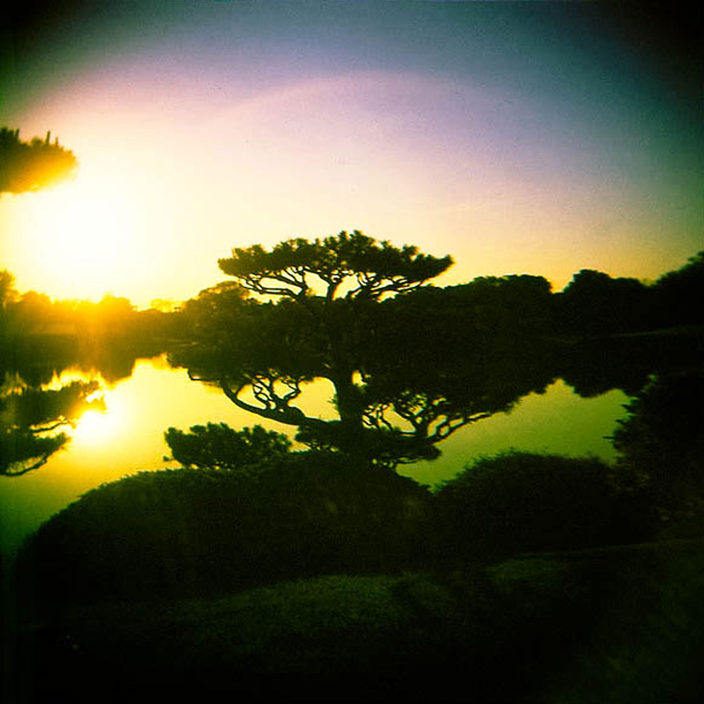

Euphorm

Fading Into Nature is a sampledelic array by Euphorm.This hypnotic piece consists entirely of fading manipulated sound.Lost within emotional growth and decay, Euphorm shadows an album smeared with ambiguous hues, complex layers, archaic structures, and splashes of optimism.A futuristic mental sauna.
Genre: Psychedelic / Experimental / Ambient
Album Art: Stefanie Turza / Maxwell Stern
Release: June 2013 /
Duration: 55:10